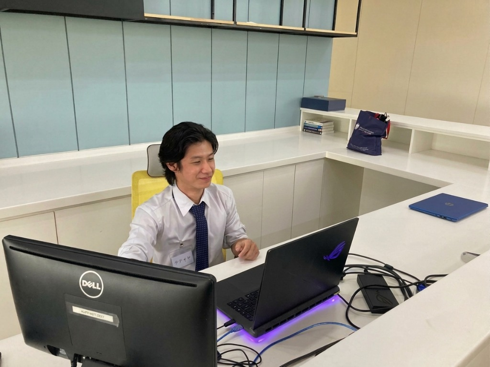
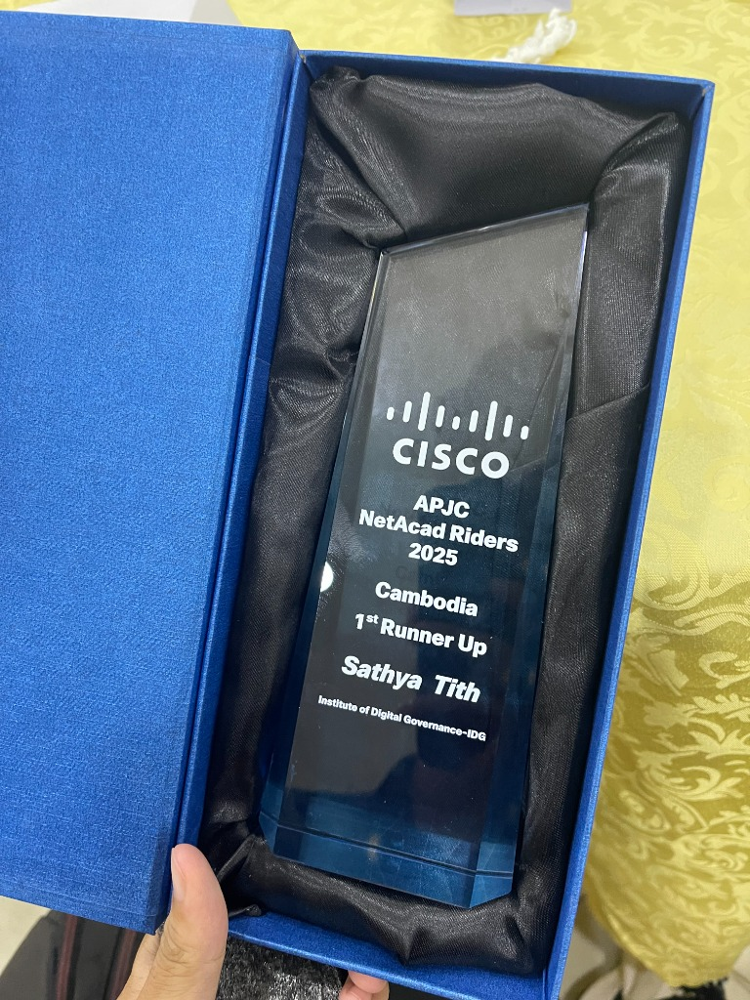
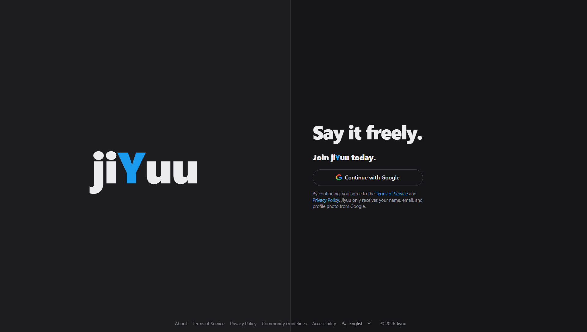
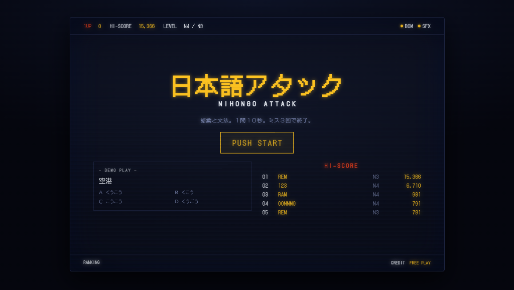
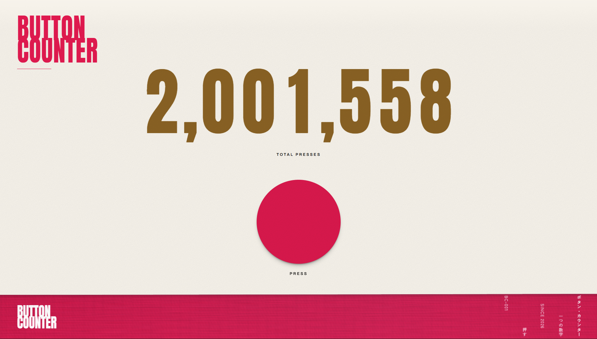
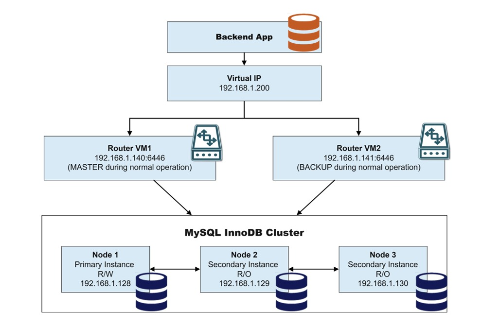

Telecom & Network Engineering · CADTJapanese IT Pathway · AUPP


Cisco regional networking competition. Tested real-time troubleshooting, link convergence, and routing under strict constraints.



